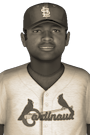

|
|
|  | CBL Player of the Week Goes to Gayles of Lincoln Monday, June 21st, 1926 Lincoln sports fans can't stop singing the praises of Quincy Gayles, who has been selected the Central Baseball League Player of the Week. Gayles was in a comfort zone all week, finishing with a .452 average (14-for-31), 8 RBIs and 2 home runs. For the season Gayles is batting .375 with 30 hits and 4 home runs. He has scored 15 times and batted in 19. |   |